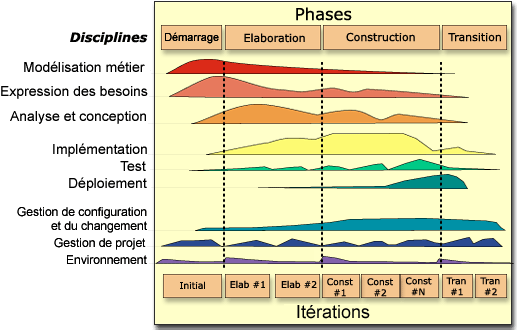

Unified Process : processus (de d�veloppement) unifi�.
Besoin
D�finir une m�thode de d�veloppement logiciel permettant :
- de livrer les projets en temps et en heure
- de satisfaire les besoins des clients finaux
- de lever les risques au plus t�t
Analyse

Gestion
Un cycle de d�veloppement de projet UP se divise en plusieurs phases :
- Cr�ation (Inception) :
- La vision du produit et son opportunit� m�tier, d�finissant le p�rim�tre du projet
- Elaboration :
- Planification des activit�s et ressources n�cessaires, sp�cification des fonctionnalit�s et conception de
l'architecture
- Construction :
- R�alisation du produit et, au travers de la vision, l'architecture et les plans jusqu'� ce que le produit -
la vision r�alis�e - soit pr�te � �tre transf�r�e aux utilisateurs
- Transition : Transmission (packaging, livraison, formation, support, maintenance) du produit pour les
utilisateurs
- (optionel) Evolution : P�riode incluant les cycles suivants, produisant autant de g�n�rations du produit
[EUP].
Technique
UP est un ensemble de bonnes pratiques techniques. C'est un processus :
- incr�mental et it�ratif : on construit le produit petit � petit, par ajouts successif de
fonctionnalit�s. Ces ajouts sont appel�s it�rations, produisant autant de versions ex�cutables (d�crites,
document�es, planifi�es, mais non compl�tes fonctionnellement) du produit. Chacune de ces it�rations consiste en
un effort variable dans les disciplines de conception, impl�mentation, test, etc. Les
it�rations se r�partissent sur les diff�rentes phases de gestion du projet, en veillant � ce que la fin d'une
phase corresponde � la fin d'une it�ration.
- pilot� par les cas d'utilisation : le syst�me d�velopp� r�pond aux besoins de l'utilisateur (tests, tracabilit�, suivi des impacts)
- g�r� par les riques : les risques techniques sont lev�s au plus t�t (tests)
- centr� sur l'architecture : l'architecture de r�f�rence du syst�me structure la conception et
limite les risques
Notes
- Adapt� aux projets objets
- Utilise UML
Limitations
- n�cessite une formation
- n�cessite une exp�rience
- Des erreurs courantes sont d'appliquer le processus (RUP par exemple) � la lettre, de g�n�rer tous les artefacts
(documents), aboutissant � un effort inutile et des produits non exploitables.
Exemples
Des exemples de m�thodologie respectant les principes de UP sont :